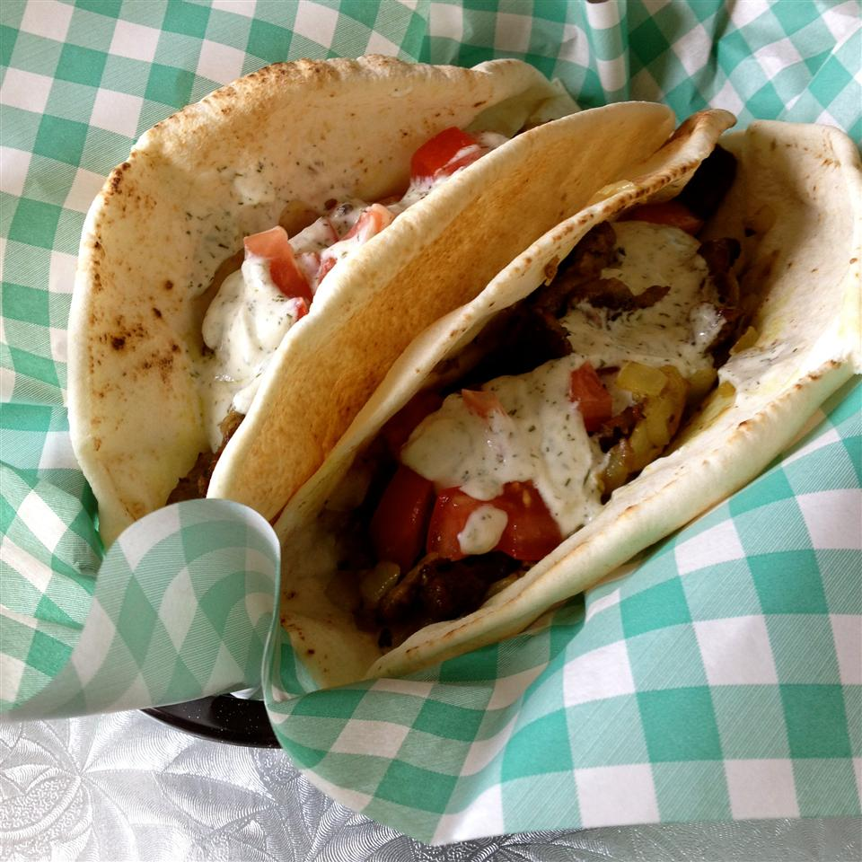

Turkish Kebab

Turkish kebab in a pita break
This is my version of Turkish kebabs which I made 'off the cuff' after searching unsuccessfully for a recipe online.
he original sandwiches are made from meat that is pressed into a loaf and grilled on a rotating spit. The meat is shaved off as it gets crispy and then put into a pita sandwich.
- 2 large onions, chopped
- 2 garlic cloves, crushed
- ½ cup olive oil
- 2 tablespoons lemon juice
- 1 teaspoon dried oregano
- 1 teaspoon ground black pepper
- ½ teaspoon ground turmeric
- 1 pinch curry powder
- 1 teaspoon salt
-
Place the chopped onions in a large ceramic bowl and crush with the bottom of a glass until juice is rendered and onions look translucent. Stir in 2 crushed garlic cloves, 1/2 cup olive oil, 2 tablespoons lemon juice, oregano, 1 teaspoon black pepper, turmeric, curry powder, and 1 teaspoon salt. Mix well; add the sliced beef and toss to coat. Cover the bowl with plastic wrap, and marinate in the refrigerator overnight.
-
Combine the sour cream, 2 tablespoons olive oil, 1 tablespoon lemon juice, 1/2 teaspoon salt, 1/2 teaspoon black pepper, dill, and 1 crushed clove of garlic. Mix well; cover the bowl with plastic wrap and refrigerate overnight.
-
Preheat the oven's broiler and set the oven rack about 6 inches from the heat source.
-
Remove the meat from the marinade mixture, brushing off extra onions. Spread the slices on a baking sheet without overlapping, and salt to taste. Broil about 3 minutes per side or until browned and crispy, turning halfway through cooking.
- Divide the cooked meat between the pita breads, and drizzle with tzatziki sauce to serve.